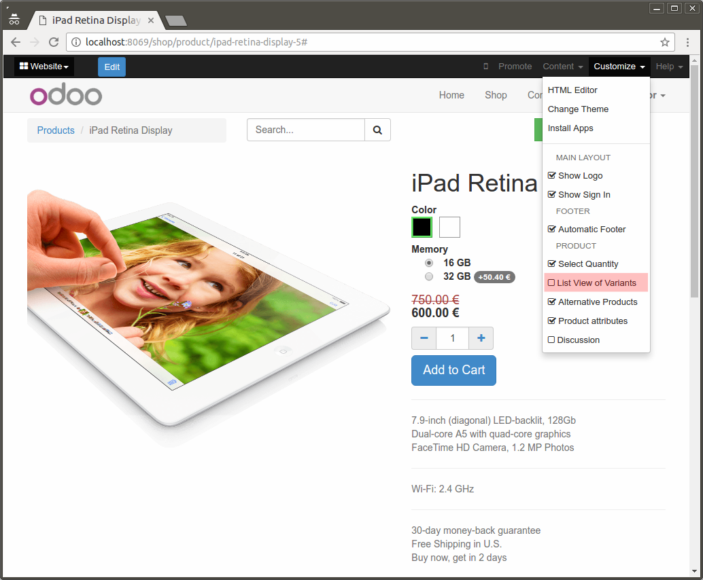
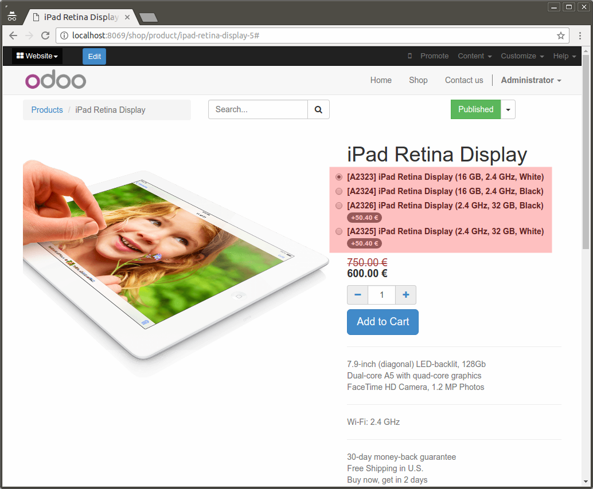

Ordenación de variantes
Además de las plantillas de producto, ahora también puede ordenar las variantes.

Go to "Sales > Products > Products", choose a "Product template" and then go to "Sales Tab" and click on "List of variants" button. You can now arrange the list as you desire.

Go to eCommerce product profile and activate the option "List View of Variants".

Now, your product variants will be shown ordered as you set in the backend.